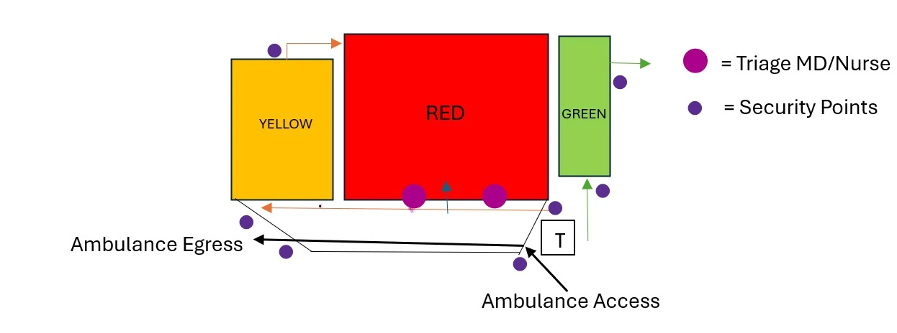

Mass Casualty Incident Management Protocol
Nasser Medical Complex Emergency Department Operating procedures
Introduction
This mass casualty plan outlines operating procedures of mass casualty incidents (MCIs) that overwhelm resource capacity at Nasser Medical Complex (NMC). The plan prioritises effective resource allocation, effective communication, and coordination to ensure the most appropriate response under high-stress circumstances. This protocol requires frequent review and updates as the situation in Gaza progresses.
Goal
- Remain calm and work in an ordered and structured manner.
- Provide the most amount of care for the most amount of people.
- Ensure rapid triage and treatment to patients.
- Allocate all staff to work areas by the clinical lead.
- Ensure only necessary staff are present in work areas.
- Maintain overall hospital function and staff safety.
- Coordinate with external healthcare providers and facilities.
Triage System
Prioritise triage based on severity of injury and likelihood of survival:
- REDImmediate treatment needed for life-threatening injuries.
- YELLOWSerious injuries requiring treatment but not immediately life-threatening.
- GREENMinor injuries that can wait for treatment.
- BLACKDead on arrival.
- BLUEUnlikely to survive.
Triage Location and Areas
Two trained triage staff are assigned to the front door of emergency to sort RED, YELLOW, and GREEN patients. Staff in each area reassess and escalate or de-escalate care as needed.
| Zone | Location |
|---|---|
| Red Zone | Main ED |
| Yellow Zone | Rub Hall (medical ED tent) |
| Overflow Yellow | Maternity and paediatric building (activation with MSF Spain) |
| Green Zone | Fast Track |
| Black Zone | Morgue |
| Blue Zone | Allocated within Main ED |

Actions
- Formally declare MCI.
- Inform surge staff and surge areas.
- Clear OT and prepare rooms for MCI patients.
- Clear all available ICU beds to receive MCI patients.
- Clear ED as per ED clearance plan and step down stable patients to Yellow ED or wards as appropriate.
- Lift all curtains to maintain full visual overview.
- Place two senior triage clinicians at front entrance for ambulance reception.
- Maintain patient flow to wards, discharge, or transfer facilities.
- Formally stand down or place MCI on standby when appropriate.
Actions for International Partners in Nasser Medical Complex
- Partners identify an MCI lead on call per shift.
- Following MCI declaration, ED runner communicates readiness to partner organisations.
- Partners manage internal referrals according to their specialties.
Conduct
Staffing
- All staff are assigned roles by the Clinical Lead.
- Only assigned staff should be active in work areas.
- Staff remain in assigned areas unless moved by Clinical Lead.
- ED staff allocation is made at the start of every shift.
- Clinical Lead is always present in ED during MCI.
- Senior Clinician (Yellow) and Clinical Lead (Red) can transfer patients between areas based on deterioration/re-prioritisation.
Assessment
- <C>ABCDE primary survey and COMA (clothes off, oxygen, monitoring, access) should be completed, summarised, and vocalised.
- Use closed-loop communication for all assessments and interventions.
- Declare immediate treatment and priorities for the next 5 to 15 minutes.
Surge Capacity
- Surge staff report to Clinical Lead for area allocation on arrival.
- When MCI is declared, communicate standby to MSF Spain.
- When overwhelmed, request MSF Spain MCI surge plan activation and start allocating yellow patients to maternity and paediatric building.
General
- Ensure dignified movement of deceased patients to the morgue.
- Security remains at allocated entry/exit points for crowd control and enters clinical areas only on request.
- Reviews by other departments should be by request only.
- Move patients onward promptly once plans are established to sustain patient flow.
- Use reduced inflow periods to restock and clean.
- Encourage staff hydration whenever possible.
Treatment
1) Treatment in Clinical Areas
- Calm, repetitive, standardised care.
- <C>ABCDE and COMA framework.
- Verbalise findings, immediate interventions, and 5-minute / 15-minute intent.
- Seek early invited surgical opinion with a specific clinical question.
2) Treatment Recommendations
- 1 g TXA for all incoming trauma patients; 2 g TXA in hypovolaemic shock or TBI (30 mg/kg in paediatrics).
- Avoid 0.9% saline in normotensive trauma.
- Give oxygen only if SpO2 is below 94% or patient is sedated.
- Consider FAST scan or X-ray in ED when available.
- Do not insert chest drains based only on primary survey if other assessment tools are available.
- Not all pneumothoraces or haemothoraces require intervention.
- Perform early ABO typing and venous blood gas (VBG).
- Use O+ blood initially (male, post-menopause women).
- Use O- blood initially (women of reproductive age), or O+ if required.
- Use 1:1 PRBC:FFP typed products once ABO is available.
- Give 10 ml of 10% calcium every 2 units of red blood cells.
- Fresh whole blood from relatives/friends may be used in extremis.
- Early haemoglobin values may be inaccurate.
- Treat based on vitals and examination (BP/HR), plus VBG; if Hb below 7 g/dl, give 1 unit PRBC and reassess.
3) Traumatic Cardiac Arrest and Peri-Arrest
- Do not prioritise CPR and do not give adrenaline/inotropes/vasopressors routinely in traumatic arrest during MCI.
- Apply HOTT principles: Hypovolaemia, Oxygenation, Tension, Tamponade.
- Use blood products, BVM and OPA, lung/cardiac ultrasound, and thoracostomy/drain as indicated.
- If no response after HOTT (maximum 15 minutes), terminate resuscitation.
- No role for ED thoracotomy in traumatic arrest during MCIs.
- GCS below 5 with GSW/shrapnel/penetrating head injury: discuss with senior lead and consider palliation.
- GCS below 5 with closed head injury: discuss neurosurgery availability and long-term survivability for resource allocation decisions.